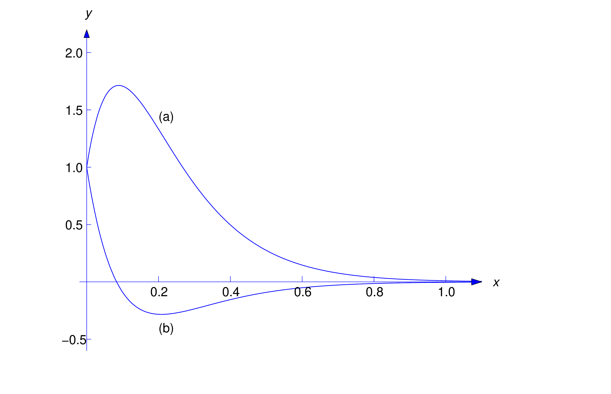

In this section we consider the motion of an object in a spring–mass system with damping. We start with unforced motion, so the equation of motion is
\begin {equation} \label {eq:6.2.1}
m \ddot{y} + c \dot{y} + ky = 0
\end {equation}
Now suppose the object is displaced from equilibrium and given an initial velocity. Intuition suggests that if the damping force is sufficiently weak the resulting motion will be oscillatory, as in the undamped case considered in Section 6.1, while if it’s sufficiently strong the object may just move slowly toward the equilibrium position without ever reaching it. We’ll now confirm these intuitive ideas mathematically.
Substitute \(y=e^{rt}\) into (6.2.1) and find the characteristic equation
The characteristic equation of (6.2.1) is
\[ mr^2+cr+k=0\]
Find the roots of \( mr^2+cr+k=0\) using the quadratic formula
The roots of \( mr^2+cr+k=0\) are
\begin {equation} \label {eq:6.2.2}
r_1={-c-\sqrt {c^2-4mk}\over 2m}\quad \mbox{ and } \quad r_2= {-c+\sqrt {c^2-4mk}\over 2m}
\end {equation}
In Section 5.2 we found that the form of the solution of (6.2.1) depends upon whether the discriminant \(c^2-4mk\) is positive, negative, or zero.
We’ll now consider these three cases:
Case 1: \(c^2-4mk>0\), so the characteristic equation has two distinct real roots, and we say the motion is overdamped
Case 2: \(c^2-4mk=0\), so the characteristic equation has a repeated real root, and we say the motion is critically damped
Case 3: \(c^2-4mk<0\), so the characteristic equation has complex roots, and we say the motion is underdamped
Case 1:
We say the motion is overdamped if \(c>\sqrt {4mk}\). In this case the zeros \(r_1\) and \(r_2\) of the characteristic polynomial are real, with \(r_1<r_2<0\) and the general solution of (6.2.1) is
\[ y=c_1e^{r_1t}+c_2e^{r_2t}\]
The motion isn't oscillatory since \(y\) can’t equal zero for more than one value of \(t\) unless \(c_1=c_2=0\).
Also the \(\lim _{t\to \infty }y(t)=0\) since \(r_1<r_2<0\)
Case 2:
We say the motion is critically damped if \(c=\sqrt {4mk}\). In this case \(r_1=r_2=-c/2m\) and the general solution of (6.2.1) is \[ y=e^{-ct/2m}(c_1+c_2t)\]
Again \(\lim _{t\to \infty }y(t)=0\) and the motion is nonoscillatory, since \(y\) can’t equal zero for more than one value of \(t\) unless \(c_1=c_2=0\).
Case 3:
We say the motion is underdamped if \(c<\sqrt {4mk}\). In this case \(r_1\) and \(r_2\) in (6.2.2) are complex conjugates, which we write as
\[ r_1=-{c\over 2m}-i\omega _1\quad \mbox{ and } \quad r_2=-{c\over 2m}+i\omega _1\]
where \[ \omega _1={\sqrt {4mk-c^2}\over 2m}\]
The general solution of (6.2.1) in this case is
\[ y=e^{-ct/2m}(c_1\cos \omega _1 t+c_2\sin \omega _1 t)\]
By the method used in Section 6.1 to derive the amplitude–phase form of the displacement of an object in simple harmonic motion, we can rewrite this equation as
\begin {equation} \label {eq:6.2.3}
y=Re^{-ct/2m}\cos (\omega _1 t-\phi )
\end {equation}
where
\[ R=\sqrt {c_1^2+c_2^2},\quad R\cos \phi =c_1,\mbox {\quad and \quad } R\sin \phi =c_2\]
The factor \(Re^{-ct/2m}\) in (6.2.3) is called the time–varying amplitude of the motion, the quantity \(\omega _1\) is called the frequency, and \(T=2\pi /\omega _1\) (which is the period of the cosine function in (6.2.3) is called the quasi–period).
A typical graph of (6.2.3) is shown in Figure 6.2.1. As illustrated in that figure, the graph of \(y\) oscillates between the dashed exponential curves \(y=\pm Re^{-ct/2m}\) and \(\lim _{t\to \infty }y(t)=0\)
Suppose a 64 lb weight stretches a spring 6 inches in equilibrium and a dashpot provides a damping force of \(c\) lb for each ft/sec of velocity.
Set up the equation of motion of the object and determine the value for the damping factor when the motion is critically damped and then finally write the equation of motion when the motion is critically damped
Set up and solve the IVP for critically damped motion if the object is initially displaced 1 foot above equilibrium and given an upward velocity of 20 ft/s
Set up and solve the IVP for critically damped motion if the object is initially displaced 1 foot above equilibrium and given a downward velocity of 20 ft/s
Solution
From (6.2.1) the equation of motion is
\begin {equation*}
m \ddot{y} + c \dot{y} + ky = 0
\end {equation*}
We need to calculate \(m\) and \(k\) and we will do so using weight as \(mg\) and Hooke's Law \(mg=k \Delta l\)
Here \(mg=64\) and using \(g=32\) we have \(m=2\)
Also \(\Delta l\) is given as 6 inches so converting to feet \(\Delta l = 1/2 \) ft and then using Hooke's Law \(mg=k \Delta l\) we can solve for \(k\)
\[
k = \frac{mg}{\Delta l} = \frac{64}{1/2} = 128
\]
Substituting in the values \(m=2\) and \(k=123\) we obtain the equation of motion
\begin {equation} \label {eq:6.2.4}
2 \ddot{y} + c \dot{y} + 128y = 0
\end {equation}
Substitute \(y=e^{rt}\) into (6.2.4) and find the characteristic equation
The characteristic equation for (6.2.4) is
\[
2r^2 + cr + 128 = 0
\]
Use the quadratic formula to solve \(2r^2 + cr + 128 = 0\) for \(r\)
The roots of which are
\begin{align*}
r = \frac{-c \pm \sqrt{c^2-4\cdot(2)\cdot(128)}}{2\cdot(2)}
= \frac{-c \pm \sqrt{c^2-1024}}{4}
\end{align*}
The discriminant is \( c^2-1024 \) and when \( c^2-1024 = 0 \) we say the motion is critically damped. Therefore the motion is critically damped when \(c^2=1024\) or when \(c=32\)
Therefore the equation of motion (6.2.4) when the motion is critically damped is given by
\begin {align*}
2 \ddot{y} + 32 \dot{y} + 128y = 0
\end {align*}
Which can be simplified by dividing by \(2\)
\begin {align*}
\ddot{y} + 16 \dot{y} + 64y = 0
\end {align*}
We already have the equation of motion for this critically damped system and including the initial conditions where the object is initially displaced 1 foot above equilibrium and given an upward velocity of 20 ft/s, thus we have the IVP
\begin {align*}
\ddot{y} + 16 \dot{y} + 64y = 0
\quad y(0)=1
\quad \dot{y}(0)=20
\end {align*}
Substitute \(y=e^{rt}\) into \(\ddot{y} + 16 \dot{y} + 64y = 0\) and find the characteristic equation
The characteristic equation is
\[
r^2 + 16r + 64 = 0
\]
Which factors
\begin {align*}
(r+8)(r+8)=&0
\Longrightarrow
r=-8
\end {align*}
So we get the real repeated root of \(-8\) meaning on solution is \(y=e^{-8t}\) and we can find the other solution using variation of parameters with \(y=ue^{-8t}\) as in Section 5.2.
Differentiate \(y=ue^{-8t}\) twice and substitute into \(\ddot{y} + 16 \dot{y} + 64y = 0\) to find \(y\)
We find \(u=t\) so \(y=te^{8t}\) to obtain our general solution
\begin {align} \label {eq:6.2.5}
y = (c_1 + c_2 t) e^{-8t}
\end {align}
Verify \(y = (c_1 + c_2 t) e^{-8t}\) is a solution to \(\ddot{y} + 16 \dot{y} + 64y = 0\)
Now to obtain our particular solution we apply the initial conditions \( y(0)=1 \) and \( \dot{y}(0)=20 \)
Evaluate \(y = (c_1 + c_2 t) e^{-8t}\) at the initial condition \(y(0)=1\)
From \(y(0)=1\) we obtain \(c_1 = 1\) and to find \(c_2\) we will need to find \(\dot{y}\)
Evaluate \(\dot{y}
=\Big( -8c_1 + (1-8t) c_2 \Big) e^{-8t}\) at the initial condition \(\dot{y}(0)=20\)
From \(\dot{y}(0)=20\) we obtain \(-8c_1 + c_2 = 20\) and substituting \(c_1 = 1\) we find \(c_2=28\) so that our particular solution is
\begin {align*}
y = (1+28t)e^{-8t}
\end {align*}
Verify \(y = (1+28t)e^{-8t}\) is a solution to \(\ddot{y} + 16 \dot{y} + 64y = 0\)
Notice that the motion of this equation is exponential
and there is no oscillation and taking the limit as \(t \to \infty\) the object approaches equilibrium from above.
We already have the equation of motion for this critically damped system and including the initial conditions where the object is initially displaced 1 foot above equilibrium and given a downward velocity of 20 ft/s thus we have the IVP
\begin {align*}
\ddot{y} + 16 \dot{y} + 64y = 0
\quad y(0)=1
\quad \dot{y}(0)=-20
\end {align*}
Solve \(\ddot{y} + 16 \dot{y} + 64y = 0\)
Solving we have our general solution
\begin {align*}
y = (c_1 + c_2 t) e^{-8t}
\end {align*}
Differentiate \(y = (c_1 + c_2 t) e^{-8t}\)
Now to obtain our particular solution we apply the initial conditions \( y(0)=1 \) and \( \dot{y}(0)=-20 \)
From \(y(0)=1\) we obtain \(c_1 = 1\) and from \(\dot{y}(0)=20\) we obtain \(-8c_1 + c_2 = -20\) and substituting \(c_1 = 1\) we find \(c_2=-12\) so that our particular solution is
\begin {align*}
y = (1 - 12t)e^{-8t}
\end {align*}
Verify \(y = (1-12t)e^{-8t}\) is a solution to \(\ddot{y} + 16 \dot{y} + 64y = 0\)
The solutions of the two IVPs from Example 6.2.1 are graphed in Figure 6.2.2

Figure 6.2.2
\(y=e^{-8t}(1+28t)\)
\(y=e^{-8t}(1-12t)\)
Set up and solve the IVP for the motion if the object in Example 6.2.1 if the damping constant is \(c=4\) and the object is initially displaced 1.5 feet above equilibrium and given an downward velocity of 3 ft/s then find the frequency, period, amplitude and phase angle.
Solution
Substituting \(c=4\) for the damping constant into the equation of motion (6.2.4) becomes
\begin {align*}
2 \ddot{y} + 4 \dot{y} + 128y = 0
\end {align*}
Which can be simplified by dividing by \(2\)
\begin {align} \label {eq:6.2.7}
\ddot{y} + 2 \dot{y} + 64y = 0
\end {align}
And including the initial conditions that the object is initially displaced 1.5 feet above equilibrium and given an downward velocity of 3 ft/s we have the IVP
\begin {align*}
\ddot{y} + 2 \dot{y} + 64y = 0
\quad y(0)=\frac{3}{2}
\quad \dot{y}(0)=-3
\end {align*}
Find and solve the characteristic equation for (6.2.7)
The characteristic equation has complex conjugate roots
\begin {align*}
r
= & {-2\pm \sqrt {4-4\cdot (1)\cdot (64)}\over 2} \\
= & {-2\pm \sqrt {-252}\over 2} = {-2\pm 6i \sqrt {7}\over 2} \\
= & -1\pm 3\sqrt 7i
\end {align*}
Since the discriminant is less than zero we call the motion underdamped. And from Section 5.2 the general solution of (6.2.7) is given by
\[ y= e^{-t} (c_1\cos 3\sqrt 7t+c_2\sin 3\sqrt 7t)\]
Verify \(y = e^{-t} (c_1\cos 3\sqrt 7t+c_2\sin 3\sqrt 7t) \) is a solution to (6.2.7)
Evaluate \(y = e^{-t} (c_1\cos 3\sqrt 7t+c_2\sin 3\sqrt 7t)\) at the initial condition \( y(0)=1.5 \)
From \( y(0)=3/2 \) we obtain \(c_1=3/2\) and to obtain \(c_2\) we need to find \(\dot{y}\)
The phase angle is determined by
\begin {align*}
\cos \theta
= & \frac{c_1}{R} \nonumber \\
= & {3\over 2} \div {4\over \sqrt{7}} \nonumber \\
= & {3\sqrt{7}\over 8}
\Longrightarrow
\theta = \cos^{-1} \left( {3\sqrt{7}\over 8} \right)
\approx 0.12533
\end {align*}
and
\begin {align*}
\sin \theta
= & \frac{c_2}{R} \nonumber \\
= & -{1 \over 2\sqrt {7}} \div {4\over \sqrt{7}} \nonumber \\
= & -{1\over 8}
\Longrightarrow
\theta = \sin^{-1} \left( -{1\over 8} \right)
\approx -0.12533
\end {align*}
Since cosine is positive and sine is negative, that puts the angle \(\theta\) in quadrant IV so the angle is \( \theta = \sin^{-1} \left(- 1 / 8 \right)
\approx -0.12533\) radians
And we can rewrite (6.2.8) as
\[ y
={4\over \sqrt 7}e^{-t}\cos \Big(3\sqrt 7t-\theta \Big)
={4\over \sqrt 7}e^{-t}\cos \Bigg( 3\sqrt 7t -
\sin^{-1} \left( - \frac{1}{8} \right) \Bigg)
\]
Set up and solve the IVP for the motion if the object in Example 6.2.1 if the damping constant is \(c=40\) and the object is initially displaced 1 foot above equilibrium and given an upward velocity of 1 ft/s
Solution
Substituting \(c=40\) for the damping constant into the equation of motion (6.2.4) becomes
\begin {align*}
2 \ddot{y} + 40 \dot{y} + 128y = 0
\end {align*}
Which can be simplified by dividing by \(2\)
\begin {align} \label {eq:6.2.9}
\ddot{y} + 20 \dot{y} + 64y = 0
\end {align}
And including the initial conditions that the object is initially displaced 1 foot above equilibrium and given an upward velocity of 1 ft/s we have the IVP
\begin {align*}
\ddot{y} + 20 \dot{y} + 64y = 0
\quad y(0)=1
\quad \dot{y}(0)=1
\end {align*}
Find and solve the characteristic equation for (6.2.9)
Find the discriminant of the characteristic equation
The characteristic equation has distinct real roots
\begin {align*}
r^2 + 20r + 64 = & 0 \\
(r+4)(r+16) = & 0 \\
r = -4 \quad r = -16 &
\end {align*}
Since the discriminant \(20^2-4\cdot64 = 400-256 = 144\) is greater than zero we call the motion overdamped. And from Section 5.2 the general solution of (6.2.9) is given by
\begin {align} \label {eq:6.2.10}
y= c_1 e^{-4t} + c_2 e^{-16t}
\end {align}
Verify \(y = c_1 e^{-4t} + c_2 e^{-16t} \) is a solution to (6.2.9)
Evaluate \(y = c_1 e^{-4t} + c_2 e^{-16t}\) at the initial condition \( y(0)=1 \)
From \( y(0)=1 \) we obtain \(c_1 + c_2 = 1\) and to obtain now we need to find \(\dot{y}\)
Differentiate \(y = c_1 e^{-4t} + c_2 e^{-16t} \)
Differentiating \(y = c_1 e^{-4t} + c_2 e^{-16t} \) we obtain
\begin {align*}
\dot{y}
= -4c_1 e^{-4t} -16 c_2 e^{-16t}
\end {align*}
Applying the initial condition \(\dot{y}(0)=1\) we obtain
\begin {align*}
-4c_1 - 16c_2 = 1
\end {align*}
So we have the system of equations
\begin{align*}
\left\{
\begin{array}{ccc}
c_1 &+& c_2 &=& 1 \\
-4c_1 &-& 16c_2 &=& 1
\end{array}
\right.
\end{align*}
Solve the system \(\left\{
\begin{array}{ccc}
c_1 &+& c_2 &=& 1 \\
-4c_1 &-& 16c_2 &=& 1
\end{array}
\right.\)
Solving the system we obtain \(c_1 = 17/12\) and \(c_2 = -5/12\) and substituting back in we obtain the particular solution
\begin{align*}
y = \frac{17}{12} e^{-4t} - \frac{5}{12} c_2 e^{-16t}
\end{align*}
Verify \(y= \frac{17}{12} e^{-4t} - \frac{5}{12} c_2 e^{-16t} \) is a solution to (6.2.9)
Now we consider the motion of an object in a spring-mass system with damping, under the influence of a periodic forcing function \(F(t)=F_0\cos \omega t\), so that the equation of motion is
\begin {equation} \label {eq:6.2.11}
m \ddot{y} + c \dot{y} + ky = F_0\cos \omega t
\end {equation}
In Section 6.1 we considered the equation of motion with \(c=0\) and found that the resulting displacement \(y\) assumed arbitrarily large values in the case of resonance (that is, when \(\omega =\omega _0=\sqrt {k/m}\)). Here we’ll find that in the presence of damping the displacement remains bounded for all \(t\), and the initial conditions have little effect on the motion as \(t\to \infty \). In fact, we’ll find that for large \(t\) the displacement is closely approximated by a function of the form
\begin {equation} \label {eq:6.2.12}
y=R\cos (\omega t-\theta )
\end {equation}
where the amplitude \(R\) depends upon \(m\), \(c\), \(k\), \(F_0\), and \(\omega \). We’re interested in the following question:
Question: Assuming that \(m\), \(c\), \(k\), and \(F_0\) are held constant, what value of \(\omega \) produces the largest amplitude \(R\) in (6.2.12), and what is this largest amplitude?
To answer this question, we must solve (6.2.11) and determine \(R\) in terms of \(F_0,\omega _0,\omega \), and \(c\). To solve (6.2.11) we first solve the complementary equation:
\[ m \ddot{y} + c \dot{y} + ky =0\]
Since \(\cos \omega t\) does not satisfy the complementary equation we can obtain a particular solution of (6.2.11) by the method of undetermined coefficients in the form
\begin {equation} \label {eq:6.2.13}
y_p=A\cos \omega t+B\sin \omega t
\end {equation}
Differentiating (6.2.13) yields
\begin{align*}
\dot{y}_p = & \quad\, \omega (B\cos \omega t -A\sin \omega t) \\ \\
\ddot{y}_p = & -\omega ^2(A\cos \omega t+B\sin \omega t)
\end{align*}
Substituting \(y_p,\) \(\dot{y}_p,\) and \(\ddot{y}_p\) into the equation of motion (6.2.11)
\begin{array}{rrr}
m\ddot{y}_p &=& -m \omega ^2 A\cos \omega t &-& m \omega^2 B \sin \omega t \\
c\dot{y}_p &=& c \omega B \cos \omega t &-& c \omega A \sin \omega t \\
+ \quad\quad\quad k y_p &=& k A \cos \omega t &+& k B \sin \omega t \\
\hline
\underset{\displaystyle F_0 \cos \omega t}{\underbrace{{\small m\ddot{y}_p + c\dot{y}_p + k y_p}}} &=& {\small( kA + c \omega B -m \omega ^2 A )} \cos \omega t &+& {\small( kB - c \omega A -m \omega^2 B )} \sin \omega t \\
\end{array}
Therefore we obtain the equation
\begin{align*}
( kA + c \omega B -m \omega ^2 A ) \cos \omega t + ( kB - c \omega A -m \omega^2 B ) \sin \omega t = F_0 \cos \omega t
\end{align*}
Equating the coefficients we obtain the system of equations
\begin{align*}
\left\{
\begin{array}{ccc}
kA + c \omega B -m \omega ^2 A &=& F_0 \\
kB - c \omega A -m \omega^2 B &=& 0
\end{array}
\right.
\end{align*}
Solve the system \(\left\{
\begin{array}{ccc}
kA + c \omega B -m \omega ^2 A &=& F_0 \\
kB - c \omega A -m \omega^2 B &=& 0
\end{array}
\right.\)
\begin{align*}
\left\{
\begin{array}{ccc}
kA + c \omega B -m \omega ^2 A &=& F_0 \\
kB - c \omega A -m \omega^2 B &=& 0
\end{array}
\right.
\longrightarrow
\left\{
\begin{array}{rrrr}
(k -m \omega^2 )A &+& c \omega B&=& F_0 \\
- c \omega A &+& (k -m \omega^2 )B &=& 0
\end{array}
\right.
\end{align*}
Solving for \(A\) and \(B\) we obtain
\begin{align*}
A = \frac{ ( k - m \omega^2 ) F_0 }{ ( k - m \omega^2 )^2 - c^2 \omega^2 }
\quad \quad
B = \frac{ c \omega F_0 }{ ( k - m \omega^2 )^2 - c^2 \omega^2 }
\end{align*}
Substituting into (6.2.13) we obtain
\begin {align*}
y_p = & A\cos \omega t+B\sin \omega t \\
y_p = & \overset{A}{\overbrace{\frac{ ( k - m \omega^2 ) F_0 }{ ( k - m \omega^2 )^2 - c^2 \omega^2 }}}\cos \omega t
+ \overset{B}{\overbrace{\frac{ c \omega F_0 }{ ( k - m \omega^2 )^2 - c^2 \omega^2 }}} \sin \omega t \\
y_p = & \frac{F_0 }{ ( k - m \omega^2 )^2 - c^2 \omega^2 } ( k - m \omega^2 ) \cos \omega t
+ \frac{ F_0 }{ ( k - m \omega^2 )^2 - c^2 \omega^2 } c \omega \sin \omega t \\
y_p = & \frac{F_0 }{ ( k - m \omega^2 )^2 - c^2 \omega^2 }
\Big[ ( k - m \omega^2 ) \cos \omega t + c \omega \sin \omega t \Big]\\
\end {align*}
Which can be written in amplitude–phase form as
\begin {equation} \label {eq:6.2.14}
y_p={F_0\over \sqrt {(k-m\omega ^2)^2+c^2\omega ^2}} \cos (\omega t-\theta )
\end {equation}
where
\begin {equation} \label {eq:6.2.15}
\cos \theta ={k-m\omega ^2\over \sqrt {(k-m\omega ^2)^2+c^2\omega ^2}}\quad \mbox{ and } \quad \sin \theta ={c\omega \over \sqrt {(k-m\omega ^2)^2+c^2\omega ^2}}
\end {equation}
To compare this with the undamped forced vibration that we considered in Section 6.1 it’s useful to write
\begin {equation} \label {eq:6.2.16}
k-m\omega ^2=m\bigg ({k\over m}-\omega ^2\bigg )= m(\omega _0^2-\omega ^2)
\end {equation}
where \(\omega _0=\sqrt {k/m}\) is the natural angular frequency of the undamped simple harmonic motion of an object with mass \(m\) on a spring with constant \(k\). Substituting (6.2.16) into (6.2.14) yields
\begin {equation} \label {eq:6.2.17}
y_p={F_0\over \sqrt {m^2(\omega ^2_0-\omega ^2)^2+ c^2\omega ^2}}\cos (\omega t-\theta )
\end {equation}
The solution of an IVP
\[
m \ddot{y} + c \dot{y} + ky = F_0 \cos \omega t
\quad y(0)=y_0
\quad \dot{y}(0) = v_0
\]
is of the form \(y=y_c+y_p\), where \(y_c\) has one of the three forms
In all three cases \(\lim _{t\to \infty } y_c(t)=0\) for any choice of \(c_1\) and \(c_2\). For this reason we say that \(y_c\) is the transient component of the solution \(y\). The behavior of \(y\) for large \(t\) is determined by \(y_p\), which we call the steady state component of \(y\). Thus, for large \(t\) the motion is like simple harmonic motion at the frequency of the external force.
The amplitude of \(y_p\) in (6.2.17) is \begin {equation} \label {eq:6.2.18} R={F_0\over \sqrt {m^2(\omega ^2_0-\omega ^2)^2+c^2\omega ^2}} \end {equation} which is finite for all \(\omega \); that is, the presence of damping precludes the phenomenon of resonance that we encountered in studying undamped vibrations under a periodic forcing function. We’ll now find the value \(\omega _{\max }\) of \(\omega \) for which \(R\) is maximized. This is the value of \(\omega \) for which the function \[ \rho (\omega )=m^2(\omega ^2_0-\omega ^2)^2+c^2\omega ^2 \] in the denominator of (6.2.18) attains its minimum value. By rewriting this as
\begin {equation}
\label {eq:6.2.19} \rho (\omega )=m^2(\omega ^4_0+\omega ^4)+ (c^2-2m^2\omega ^2_0)\omega ^2
\end {equation}
we find that \(\rho \) is a strictly increasing function of \(\omega ^2\) if \[ c\ge \sqrt {2m^2\omega ^2_0}=\sqrt {2mk}\] (Recall that \(\omega ^2_0=k/m\)).
Therefore \(\omega _{\max }=0\) if this inequality holds. From (6.2.15), you can see that \(\phi =0\) if \(\omega =0\). In this case, (6.2.14) reduces to \[ y_p={F_0\over \sqrt {m^2\omega ^4_0}}={F_0\over k}\] which is consistent with Hooke’s law: if the mass is subjected to a constant force \(F_0\), its displacement should approach a constant \(y_p\) such that \(ky_p=F_0\). Now suppose \(c<\sqrt {2mk}\). Then, from (6.2.19), \[ \frac{d\rho}{d\omega} =2\omega (2m^2\omega ^2+c^2-2m^2\omega ^2_0)\] and \(\omega _{\max }\) is the value of \(\omega \) for which the expression in parentheses equals zero; that is, \[ \omega _{\max }=\sqrt {\omega ^2_0-{c^2\over 2m^2}} =\sqrt {{k\over m}\left (1-{c^2\over 2km}\right )}\] (To see that \(\rho (\omega _{\max })\) is the minimum value of \(\rho (\omega )\), note that \(\frac{d\rho}{d\omega} <0\) if \(\omega <\omega _{\max }\) and \(\frac{d\rho}{d\omega} >0\) if \(\omega >\omega _{\max }\).) Substituting \(\omega =\omega _{\max }\) in (6.2.18) and simplifying shows that the maximum amplitude \(R_{\max }\) is \[ R_{\max }={2mF_0\over c\sqrt {4mk-c^2}} \quad \mbox{ if } \quad c< \sqrt {2mk}\] We summarize our results as follows.
Theorem 6.2.1
Suppose we consider the amplitude \(R\) of the steady state component of the solution of
\[ m \ddot{y} + c \dot{y} + ky = F_0\cos \omega t \]
as a function of \(\omega \).
(a) If \(c \ge \sqrt {2mk}\), the maximum amplitude is \(R_{\max }=F_0/k\) and it’s attained when \(\omega = \omega _{\max }=0\).
(b) If \(c < \sqrt {2mk}\), the maximum amplitude is
\begin {equation}
\label {eq:6.2.20} R_{\max }={2m F_0\over c\sqrt {4mk-c^2}}
\end {equation}
and it’s attained when
\begin {equation}
\label {eq:6.2.21} \omega =\omega _{\max }=\sqrt {{k\over m}\left (1-{c^2\over 2km}\right )}
\end {equation}
Note that \(R_{\max }\) and \(\omega _{\max }\) are continuous functions of \(c\), for \(c\ge 0\), since (6.2.20) and (6.2.21) reduce to \(R_{\max }=F_0/k\) and \(\omega _{\max }=0\) if \(c=\sqrt {2km}\).